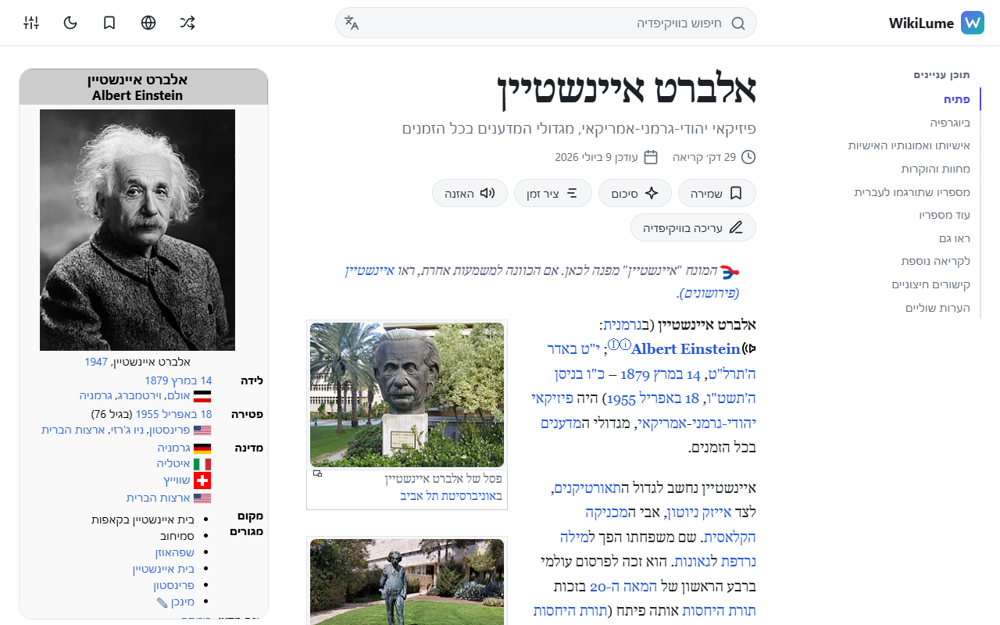
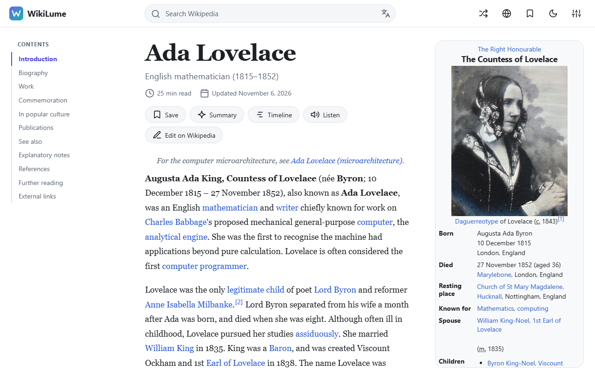
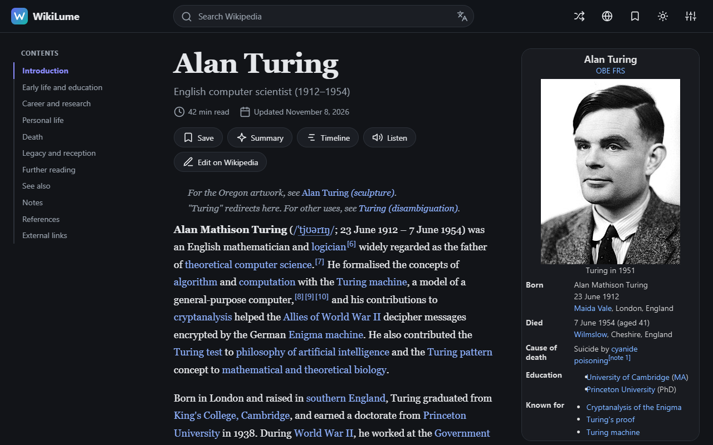
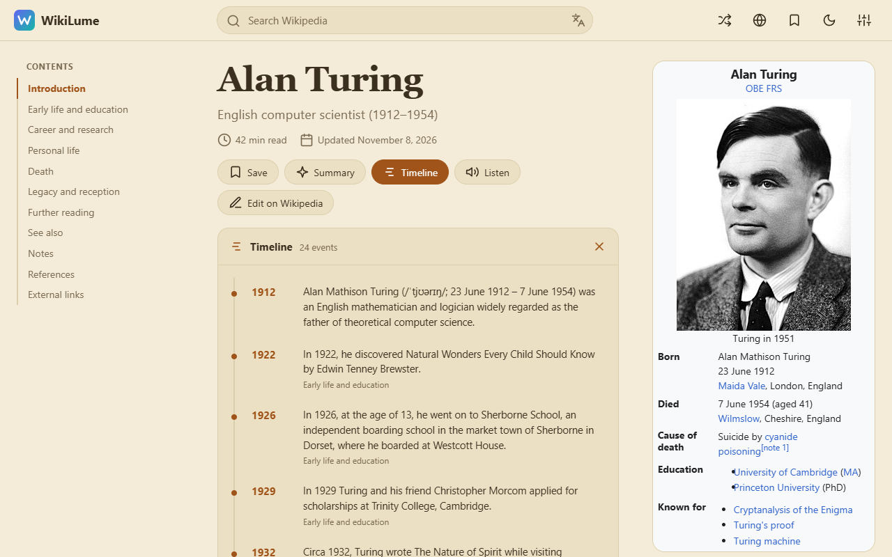
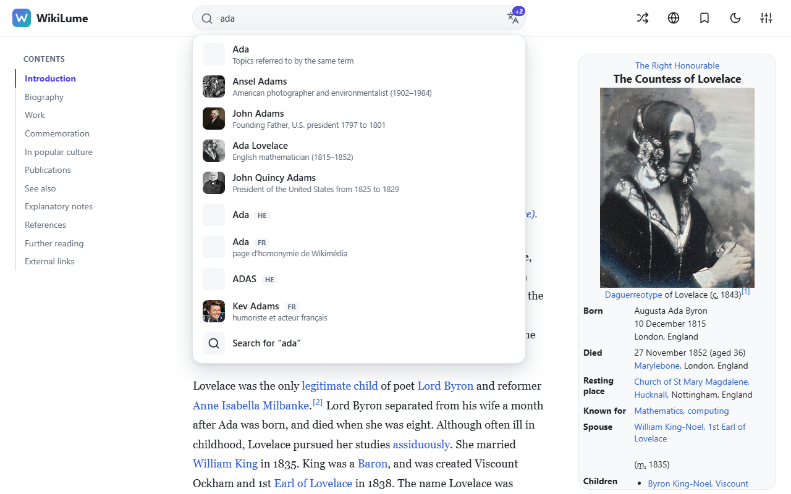

תצוגה רגועה ומודרנית עם תוכן עניינים, ערכות נושא, תצוגה מקדימה, סימניות וחיפוש רב-לשוני. חינם. בלי חשבון. בלי מעקב.
הוספה ל-Chromeלכל היכולות
כותרת גדולה, זמן קריאה, תוכן עניינים צף ותיבת המידע בעמודה צדדית.
אוטומטי, בהיר, ספיה וכהה, כולל התאמה של טבלאות, תבניות ונוסחאות. גופן, גודל ורוחב לבחירתכם.
כרטיסים בריחוף מעל קישורים והפניות, הצעות תוך כדי הקלדה, ערך אקראי ומעבר בין שפות.
מסמנים עוד ויקיפדיות ומשווים את התוצאות שלהן זו לצד זו.
שמירת ערכים, סינון, ייצוא וייבוא לקובץ. בעמוד ובחלון התוסף.
אירועים עם תאריכים שנשלפים מטקסט הערך.
נכתב אצלכם במכשיר בידי ה-AI המובנה של Chrome, ורק אחרי שהסכמתם להורדת המודל החד-פעמית.
תמיכה מלאה בעברית וב-RTL, ממשק בעברית או באנגלית, הקראה בקול, תמונת כותרת ותצוגה מוגדלת.




בלי חשבון, בלי אנליטיקה, בלי פרסומות ובלי קוד מרוחק. התעבורה היחידה היא לוויקיפדיה עצמה. ההגדרות והסימניות נשארות בדפדפן. ההרשאה היחידה היא "storage". מדיניות הפרטיות